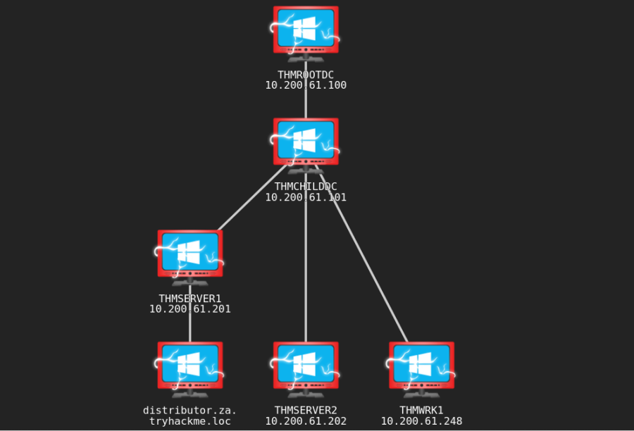
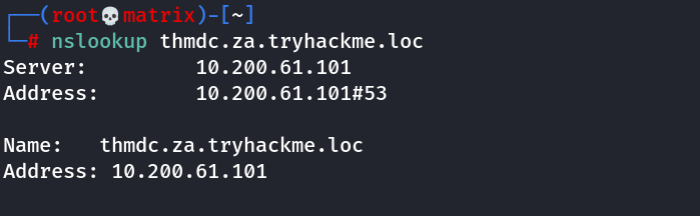
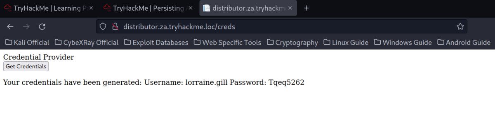
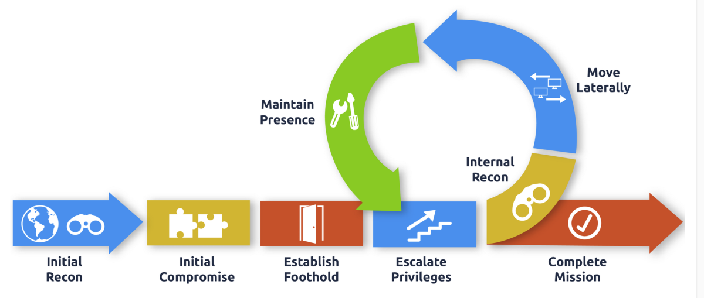

Persisting Active Directory
Persisting Active Directory

Using Networks in Tryhackme:
First, Download a different vpn file. Named: exploitingad.ovpn from Tryhackme
Then,
You will have to configure DNS on the host on which you are running the VPN connection. In order to configure our DNS, we must edit the /etc/systemd/resolved.conf file. Uncomment the DNS line and add the IP of THMDC: (As Shown in Network Diagram Above)

Finally, Restart the service:
systemctl restart systemd-resolved
Or
Add the DNS in GUI Network Manager/nmtui tool (1st is the THM DNS then use default in the 2nd place).
and restart the Network Manager service:
systemctl restart NetworkManager
Testing DNS Status
nslookup thmdc.za.tryhackme.loc

Requesting Your Credentials
To simulate an AD breach, you will be provided with your first set of AD credentials. Once your networking setup has been completed, on your Attack Box, navigate to http://distributor.za.tryhackme.loc/creds to request your credential pair. Click the "Get Credentials" button to receive your credential pair that can be used for initial access.
This credential pair will provide you RDP and SSH access to THMWRK1.za.tryhackme.loc. THMWRK1 can be seen as a jump host into this environment, simulating a foothold that you have achieved. Jump hosts are often targeted by the red team since they provide access to a new network segment. You can use Remmina or any other similar Remote Desktop client to connect to this host for RDP. Remember to specify the domain of za.tryhackme.loc when connecting.
For SSH access, you can use the following SSH command:
ssh za\\<AD Username>@thmwrk1.za.tryhackme.loc
or
ssh za.tryhackme.loc\\<AD Username>@thmwrk1.za.tryhackme.loc

AD Persistence
During our attack against AD, we need to make sure that we deploy persistence. This will ensure that the blue team can't kick us out by simply rotating some credentials. As mentioned before, the process of compromising AD is cyclic. We would deploy persistence as we compromise the AD estate and not just at the very end. This ensures that if one of our positions gets burnt by the blue team, we have several fallbacks. In this persistence phase, we will use several techniques that can ensure our gained access cannot simply be revoked. These persistence techniques are dependent on the specific permissions and privileges we have acquired thus far.

Learning Objectives
In this network, we will cover several methods that can be used to persist in AD. This is by no means a complete list, as available methods are usually highly situational and dependent on the AD structure and environment. However, we will cover the following techniques for persisting AD:
▸ AD Credentials and DCSync-ing
▸ Silver and Golden Tickets
▸ AD Certificates
▸ AD Security Identifiers (SIDs)
▸ Access Control Lists
▸ Group Policy Objects (GPOs)